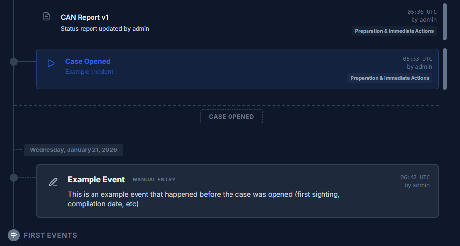
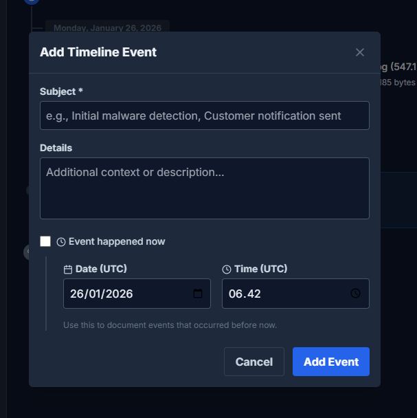
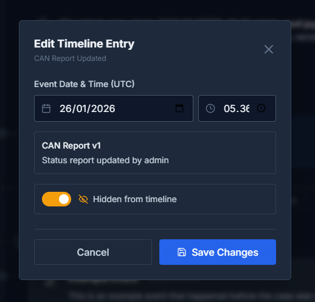
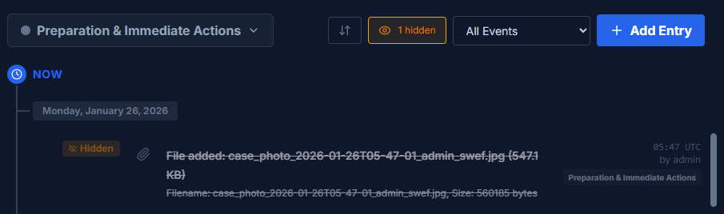

Timeline
Build a chronological record of events to understand the sequence of activities during an investigation or incident.
Overview
The Timeline provides a chronological view of all events related to a case. It automatically captures case activities and allows investigators to add manual entries for events discovered during analysis.
Events are grouped by date and displayed with timestamps in UTC. The timeline shows a "Case Opened" separator to distinguish between events that occurred before the case was created and those that happened during the investigation.
Automatic Events
DFIRe automatically logs these events to the timeline:
| Event Type | Description |
|---|---|
| Case Created | When the case was first created |
| Case Closed/Reopened/Archived | Case status changes |
| Escalated to Incident | When a case is escalated to incident mode |
| Phase Changed | Incident phase transitions |
| Lead Investigator Changed | When case leadership changes |
| Evidence Added | New evidence items added to the case |
| Evidence Step Updated | When an evidence item's processing step changes |
| Files Added | Attachments added to case or evidence items |
| Notes Added | Notes added to case or evidence items |
| Actions Started/Completed | When incident actions are started or completed |
| CAN Report Updated | When a new CAN report version is created |
Adding Manual Events
Add events discovered during your investigation that occurred outside of DFIRe:
- Click "Add Entry" in the Timeline tab
-
Enter the Subject
A brief description of what happened (required).
-
Add Details
Additional context or description of the event.
-
Set the Event Time
Choose "Event happened now" for current events, or specify the date and time (in UTC) when the event actually occurred.
-
Save the Event
The event appears in chronological order on the timeline.
Tip: Use manual entries to document events that happened before the case was opened, such as initial malware detection, first sighting dates, or compilation timestamps.
Hiding Events
Events can be hidden from the default timeline view to reduce noise without deleting them:
- Hover over any event and click "Edit"
- Toggle "Hidden from timeline" on
- Save changes
Hidden events are preserved in the database and can be shown again at any time.
Viewing Hidden Events
Click the "hidden" button in the toolbar to toggle visibility of hidden events. The button shows how many events are currently hidden. When viewing hidden events, they appear with a "Hidden" tag and strikethrough styling.
Note: Case Created and Phase Changed events cannot be edited or hidden as they are fundamental case milestones.
Filtering and Sorting
The timeline toolbar provides several options to focus on specific events:
Event Type Filter
Use the "All Events" dropdown to filter by specific event types:
- Manual Entries
- Phase Changes
- Actions Started / Actions Completed
- Evidence Added / Step Changes
- Case Files / Evidence Files
- Case Notes / Evidence Notes
Sort Order
Click the sort button to toggle between:
- Newest First: Most recent events at the top (default)
- Oldest First: Earliest events at the top
Incident Phases
For incident cases, the timeline integrates with incident phases:
- Phase indicator: Each event shows the incident phase when it occurred
- Phase changes: Phase transitions are highlighted as prominent events
- Change phase: Click the current phase in the toolbar to change to a different phase
Phase changes create timeline events automatically, documenting when the incident moved between phases and who made the change.
Timeline in Reports
The timeline is automatically included in investigation reports as a generated section. All visible timeline events (excluding hidden ones) are rendered chronologically in the report output.
To exclude specific events from reports, hide them from the timeline before generating the report.
Best Practices
Maintaining Accuracy
- Use source timestamps: Always use the timestamp from the original source, not when you found it
- Note timezone: All times in DFIRe are displayed in UTC - convert timestamps accordingly
- Document uncertainty: If a timestamp is approximate, note it in the details field
Effective Timeline Building
- Start with known anchor points (incident start, detection time)
- Work forwards and backwards from anchor points
- Add manual entries for pre-case events as you discover them
- Hide routine events that add noise without value
Using Timeline for Analysis
- Identify patterns in attacker behavior
- Determine dwell time (time between compromise and detection)
- Reconstruct the attack chain
- Correlate events across multiple evidence sources